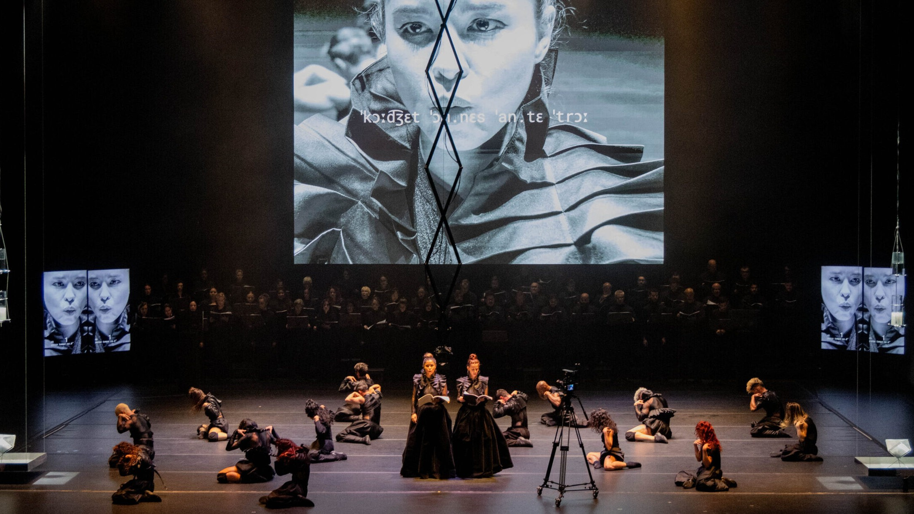

Foto — Larissa Paz
Dança
“Réquiem SP” volta ao Theatro Municipal com Balé da Cidade, orquestra e coral em cena
Criada por Alejandro Ahmed, peça coreográfica retorna à Sala de Espetáculos em seis apresentações entre 15 e 22 de agosto Depois de abrir a temporada de 2025 do…